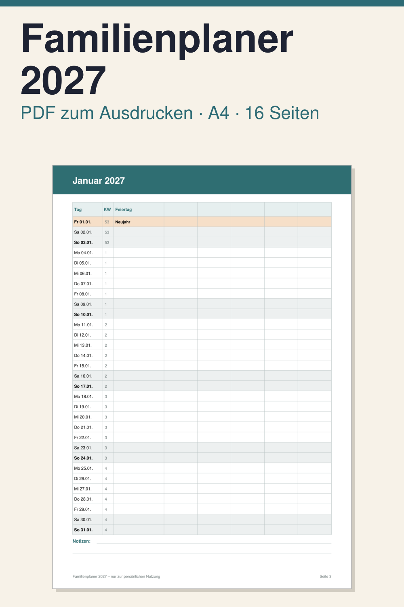

Familienplaner 2027 zum Ausdrucken: Monatsseiten für die ganze Familie

Der Familienplaner 2027 ist eine Vorlage zum Ausdrucken, in der jedes Familienmitglied seine eigene Spalte bekommt. So sehen Sie auf einen Blick, wer wann Termine, Schichten, Training oder Aufgaben hat. Er richtet sich an Familien, die ihre Woche gemeinsam auf Papier planen möchten.
Das PDF hat 16 Seiten im Format DIN A4 hochkant, auf Deutsch. Enthalten sind: ein Deckblatt mit Kurzanleitung und Feldern für bis zu 5 Namen, eine Jahresübersicht mit allen 12 Monaten, zwölf Monatsseiten von Januar bis Dezember 2027 mit Tagen, Kalenderwochen, Feiertagen und einer Spalte je Person, eine Seite für Geburtstage und Jahrestage sowie eine Seite für Ferien, Urlaub und Notizen. Eingetragen sind nur die bundesweiten gesetzlichen Feiertage; Schulferien und Feiertage Ihres Bundeslandes tragen Sie selbst ein.
So nutzen Sie ihn: PDF herunterladen, auf A4 in der Größe 100 % ausdrucken, die Namen der Familienmitglieder in die Spaltenköpfe schreiben und Termine von Hand eintragen. Das PDF ist nicht digital ausfüllbar. Es ist ein digitaler Download, es wird nichts per Post verschickt. Der Planer ist zur persönlichen Nutzung gedacht.
Hinweis: Inhalt und Aufbau dieser Vorlage wurden mit KI-Unterstützung (Claude, Anthropic) entworfen, das PDF wurde per Software erzeugt. Dieser Text wurde ebenfalls mit KI-Unterstützung erstellt.
Vorlage mit KI-Unterstützung erstellt, Layout per Software erzeugt.